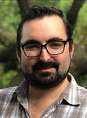

 Kyle van der Merwe

The Early Years
Born in Swakopmund, Namibia, I then grew up in Johannesburg. Growing up I always had a passion and enthusiasm with computers. I built my first PC when i was 12, after winning a CPU and Motherboard from a Intel competition at my school. Since then I have enjoyed programming and gaming on computers, consoles and mobile devices.
High School
After high school I moved to Stellenbosch to study Electrical and Electronic Engineering. While I enjoyed the Electronic part of the course, I was not so enthusiastic about the electrical. 5 years later I started working at Elsumo, still without a complete degree.
Recently
Elsumo is a pump importer, installation and service company. I was hired as a Operations and Technical Assistant, but ended up being very involved with almost every aspect of the technical side of the company. From Pump selection, Quoteing, Electronic Control design and isntalation, I have been integral in the day to day running of the engineering department. After working for so many years at Elsumo, I have felt again the call from the computer industry. HyperionDevs Software Engineering course has refreshed my computer and programming experience, and I am now looking for a career shift into something more IT based.